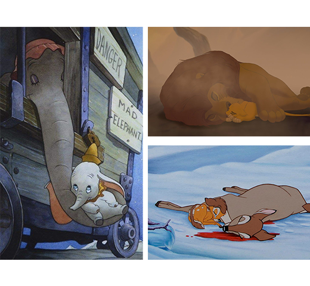

¿Los dibujos ayudan a desarrollar la empatía en el niño o, por el contrario, impiden que se desarrolle en contextos reales?
Los dibujos animados pueden ayudar a desarrollar la empatía en los niños tanto como dificultar que se desarrollen en contextos reales, pero también es posible que suceda justo contrario. Todo estará en función de que el tipo de dibujos que se les ofrezca al niño (la temática de la historia, la dinámica de interrelación entre los protagonistas…) sean o no adecuados para su tramo de edad y, en general, para un niño.
Los niños comienzan a desarrollar muy precozmente su capacidad empática, y ésta puede ser mucho más veraz y espontánea que en la mayoría de los adultos. Resulta enternecedor contemplar la imagen de una niña de dos años llorando desconsoladamente al ver unos dibujos animados en la que las Chipettes de Alvin y las Ardillas cuidan a un pequeño pingüino que se ha perdido de sus padres.
Más o menos a la edad de la niña que aparece en video (sobre los dos años) es cuando los niños comienzan a desarrollar la capacidad para sintonizar emocionalmente con los demás (es decir, la empatía), una emoción basada en buena parte en la conciencia de uno mismo.
En esos casos, los niños pueden manifestar reacciones de llanto por angustia empática, mientras en antes de los dos años lo que se suele manifestar es llanto por contagio al ver llorar a otro niño.
Una trama argumental que fomente emocionalmente una respuesta de llanto empático, no tiene porqué ser perjudicial para el niño, sin embargo, forzar la sensibilidad infantil más allá del límite del sufrimiento sí que podría ser cruel y no aportar nada positivo a la evolución de su afectividad.
¿Cómo afectan los dibujos a las emociones? ¿Cómo puede ser bueno para un niño ver “dramones” tipo Marco o la muerte de la madre de Bambi? ¿En qué les ayuda?
Una trama argumental que fomente emocionalmente una respuesta de llanto empático, no tiene porqué ser perjudicial para el niño, mientras que forzar la sensibilidad infantil más allá del límite del sufrimiento puede afectarle tanto en sufrimiento como al no aportar nada positivo a la evolución de su afectividad.
Es habitual que un niño sufra cuando le suceda algo malo a uno de los padres del protagonista de los dibujos o la película que está viendo, por ejemplo la separación y aun más la muerte. Dos ejemplos son la muerte de la madre de Bambi o la cruel separación de Dumbo de su progenitora.
También la muerte de un niño en la pantalla promueve un terrible dolor a los más pequeños que aun no tienen sentido de su propia mortalidad. Las consecuencias emocionales de estas situaciones pueden ser traumatizantes. Igualmente sucede cuando un niño contempla en la pantalla la muerte de un animal inocente, sobre todo aquellos niños que tienen mascota y especialmente un perro.

Si bien los niños más mayores pueden comprender hasta cierto punto la muerte y las pérdidas por separación, también están expuestos a sufrir al ver escenas que produzcan miedo, situaciones violentas, secuestros, y todas aquellas dotadas de una carga emotiva lo suficientemente intensa para afectarles emocionalmente, provocarles miedo a sufrir o bien contemplar la muerte como un castigo. Es estos casos es muy importante que los padres estén alerta y dispuestos a aclarar al niño todas sus dudas, responder a sus preguntas y negociar hábilmente para evitar que su hijo vea una película para la que aun no está lo suficientemente maduro.
¿Lo grosero y lo grotesco en qué convienen a los niños? (pedos, culos, vocabulario informal, gamberradas…)
En primer lugar deberíamos considerar que, aunque existe una gran variedad de dibujos animados, no todos están indicados para un público infantil ni son adecuados para niños aunque se publiciten como destinado a ellos.
El mero hecho de que una serie televisiva esté producida en formato de dibujos, no la convierte en recomendable para consumo de los niños, un error en el que muchos padres incurren al permitir ver a sus hijos dibujos de su nulo contenido educativo sino y temáticas e ingredientes —por ejemplo, incitación a la violencia— que el niño no está maduro para asimilar.
Es el caso de Dragon Ball Super, cuya violencia (prácticamente en todas las escenas) la hace desaconsejable para los más pequeños.
Tampoco es recomendable para los más pequeños la serie Bob Esponja, no sólo por su humor negro —imposible de entender a estas edades— sino por las ideas absurdas que propone y llevan a cabo los protagonistas (por ejemplo, en un el capítulo se aconseja meter los pies en aceite hirviendo para curar un resfriado).
Un ejemplo más lo encontramos en la permisividad con que muchos padres permiten a sus hijos ver Los Simpson, una serie no debería autorizarse para menores de 12-14 años por los comportamientos absurdos o violentos que exhiben los personajes y lo excesivamente marcados que están los roles de género.